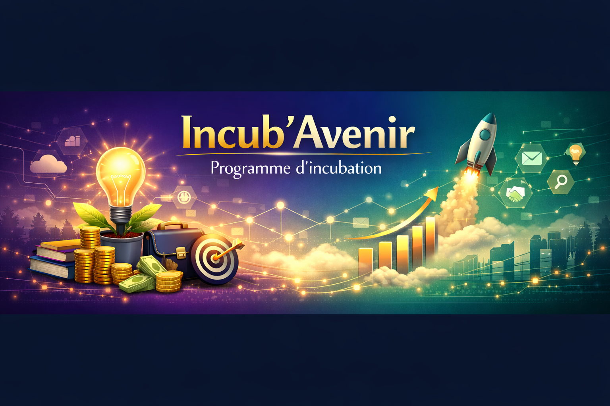
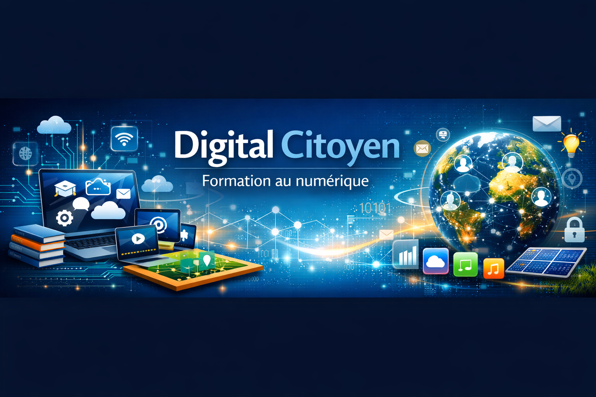
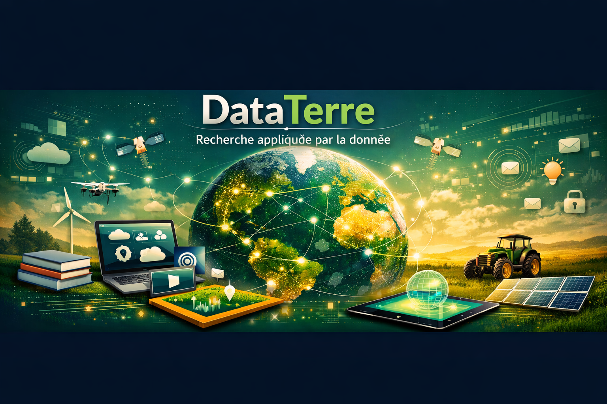
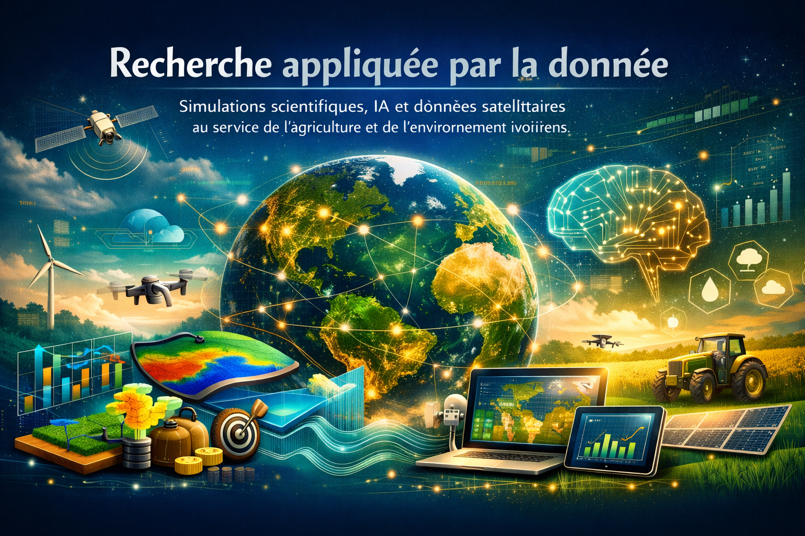

Des actions concrètes, mesurables et reconduites chaque année pour transformer nos objectifs en résultats.
Un accompagnement de six mois pour transformer une idée en entreprise viable, avec mentorat, financement d'amorçage et mise en réseau.

Un programme itinérant de formation aux compétences digitales de base et avancées, dans les grandes villes comme dans les zones reculées.

Un programme de plantation et de sensibilisation environnementale mené avec les communautés locales et les autorités municipales.

Un dispositif de bourses et de mentorat scolaire pour soutenir les élèves et étudiants méritants issus de milieux modestes.
Un laboratoire de recherche qui combine simulations scientifiques, intelligence artificielle et données satellitaires au service de l'agriculture et de l'environnement ivoiriens.

Bénévoles, experts et partenaires sont les bienvenus dans chacun de nos programmes.
Devenir membre